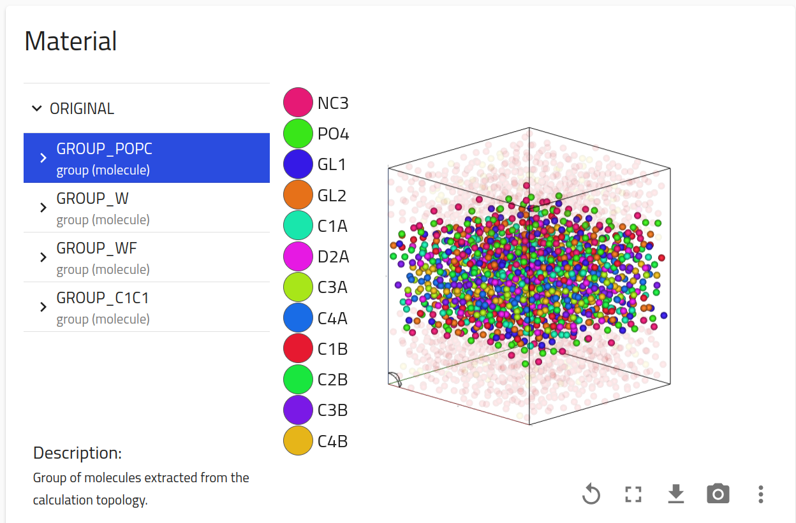

Explore

🔍 Explore the NOMAD Gallery
Browse community-submitted use cases showing how NOMAD is used in real research workflows. Use the filters below to explore by methodology, research field, or keywords.
Search interface for the perovskite solar cell database
A search interface to explore the perovskite solar cell database based on materials and device properties.
Submitter: Pepe Marquez

Search interface for the perovskite solar cell database
A search interface to explore the perovskite solar cell database based on materials and device properties.
Submitter: Pepe Marquez

Ionic Liquids under shear
This is a test card to verify the new schema fields. It demonstrates how the Research Field, Institution, Data Size, and Metrics appear on the gallery card.
Submitter: Abbas Gholami
Coauthors: Joe Rudzinski
Methodology: Computational
Technique: MD simulations
Data Size: 1.5 TB
Impact: 150 Users, 5000 Downloads
Funding: DFG - Project No. 460197019
Publication: https://doi.org/10.1063/5.0279946
Keywords: Ionic Liquids Molecular Dynamics Non-equilibrium

Visualization of a lipid bilayer according to the coarse-grained MARTINI model
The NOMAD visualizer now has support for non-atomic particles (i.e., particles representing something other than a chemical element).
Submitter: Joseph Rudzinski

Submitted: 2025-02-15
Pulsed Laser Deposition (PLD)
Pulsed Laser Deposition (PLD)
Submitter: Pepe Márquez (HU Berlin) or GitHub handle